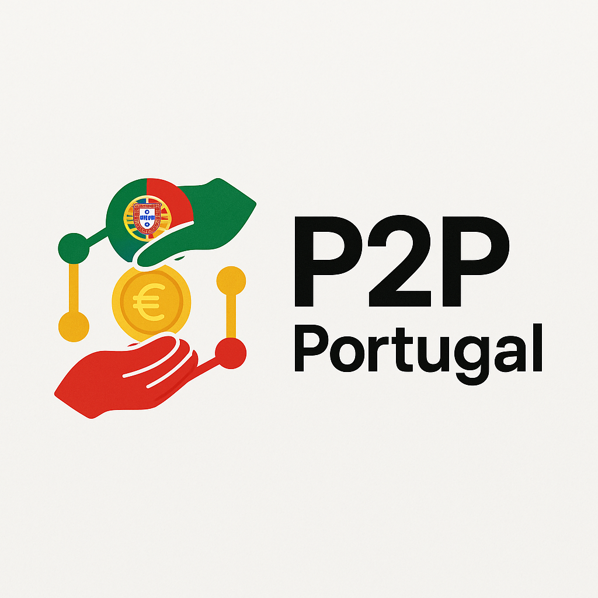
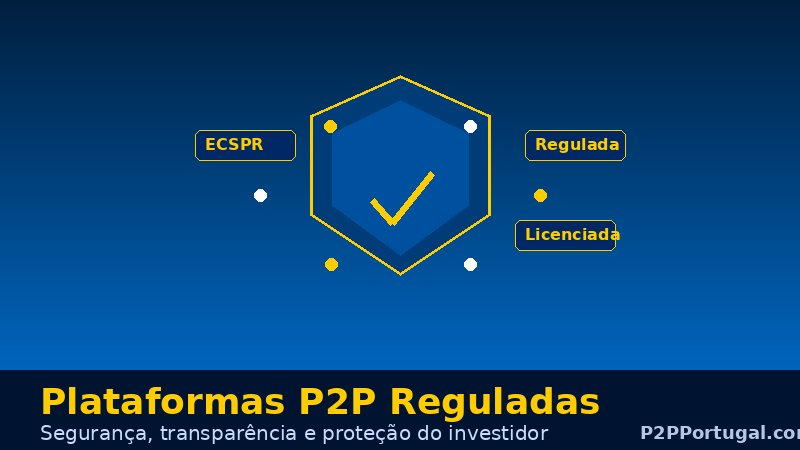
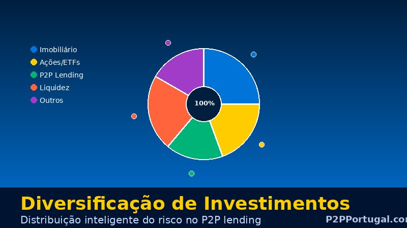
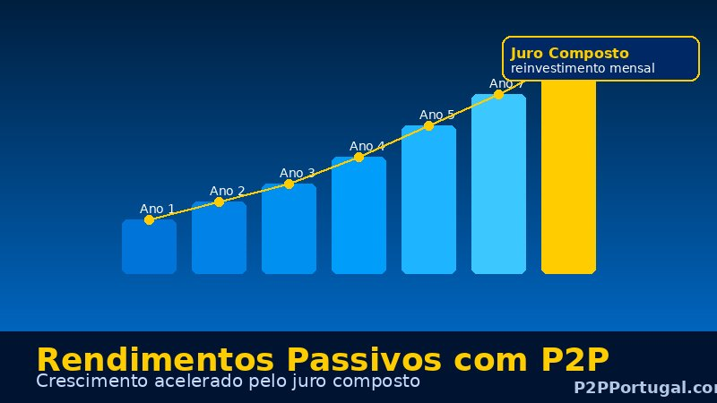
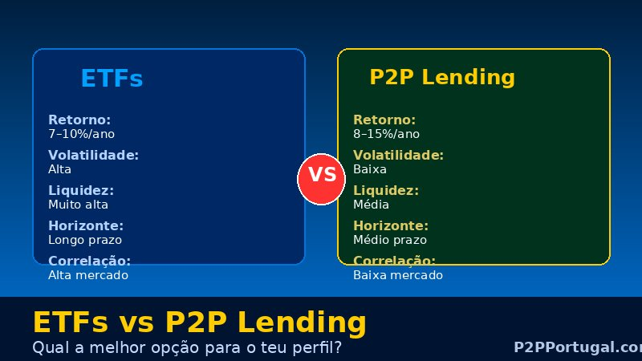
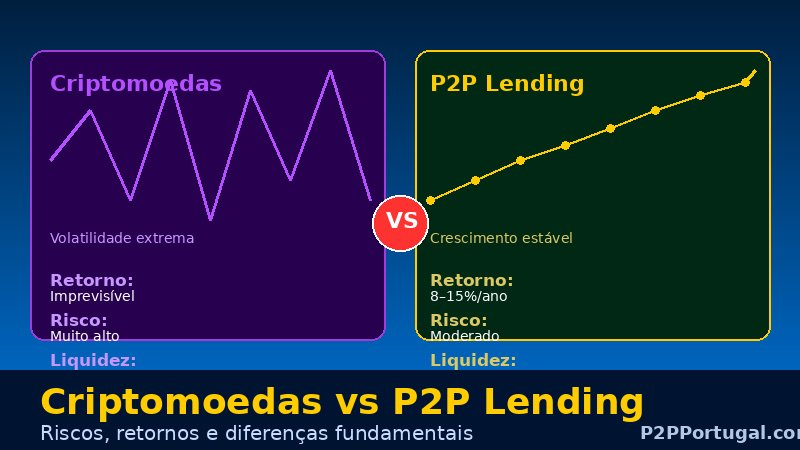
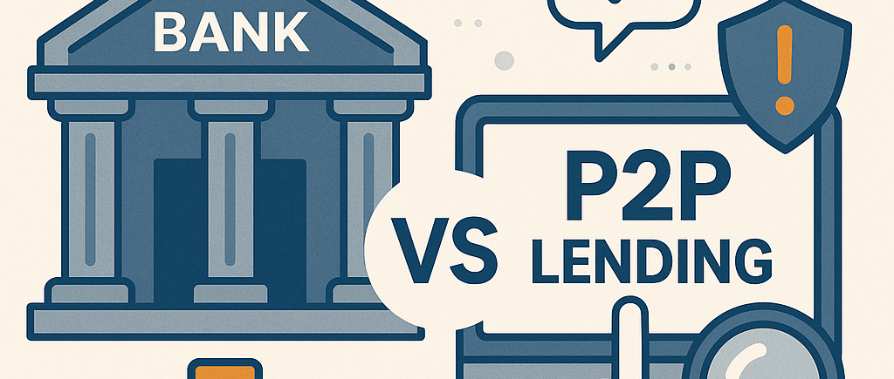
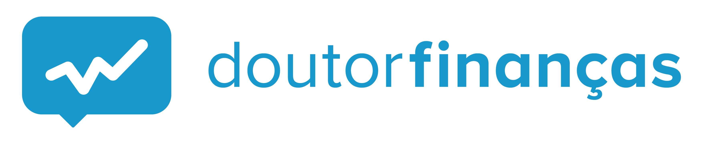
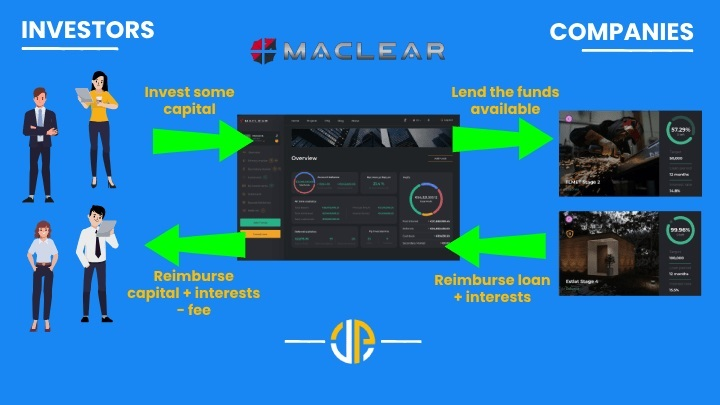
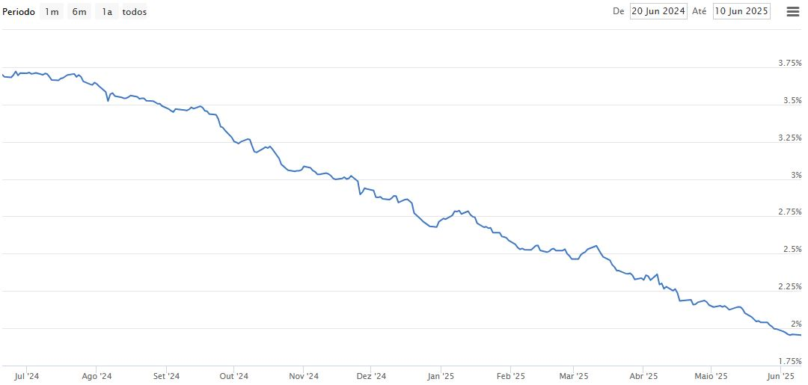

Comparação entre Produtos Financeiros: Segurança, Risco e Potencial de Retorno
Análise comparativa entre depósitos a prazo, certificados de aforro, mercado de capitais, P2P lending e criptomoedas. Descobre qual o produto certo para o teu perfil de risco.
Ler artigo: Comparação entre Produtos Financeiros

Plataformas P2P Reguladas: vantagens, riscos e o que perdes sem regulação
O que significa uma plataforma P2P ser regulada? Vantagens do ECSPR, o que a regulação protege e o que não protege, e como verificar a licença antes de investir.
Ler artigo: Plataformas P2P Reguladas

A importância da diversificação nos investimentos — e nos P2P em particular
Os três eixos de diversificação no P2P (entre plataformas, tipos de empréstimo e geografias), os erros mais comuns e como construir um portfólio verdadeiramente equilibrado.
Ler artigo: A importância da diversificação

Como obter rendimentos passivos com plataformas P2P
Guia prático para construir rendimento passivo com P2P lending: juro composto, estratégias de reinvestimento, escolha de plataformas e fiscalidade em Portugal.
Ler artigo: Rendimentos Passivos com P2P

ETFs vs P2P Lending: qual a melhor opção para o teu perfil?
Comparação detalhada entre ETFs e P2P Lending: retornos históricos, volatilidade, liquidez, fiscalidade em Portugal e adequação a diferentes perfis de investidor.
Ler artigo: ETFs vs P2P Lending

Criptomoedas vs P2P Lending: riscos, retornos e diferenças fundamentais
Comparação entre criptomoedas e P2P lending: volatilidade, previsibilidade do retorno, liquidez, regulação e para que tipo de investidor é cada um mais adequado.
Ler artigo: Criptomoedas vs P2P Lending

Financiamento Bancário vs. Empréstimos P2P
Descobre as principais diferenças entre o modelo bancário tradicional e o sistema de empréstimos P2P. Uma análise clara, prática e pensada para investidores portugueses.
Ler artigo: Financiamento Bancário vs. P2P Lending
Como será o mercado de empréstimos P2P em 2030?
Prevê-se que o setor dos empréstimos P2P se consolide como alternativa regulamentada até ao final da década. Tendências, tokenização, desafios de liquidez e regulamentação europeia.
Ler artigo: Como será o mercado P2P em 2030?

O triângulo dos Investimentos: Risco, Tempo e Retorno
O triângulo dos investimentos explica a relação entre risco, retorno e tempo. Uma ferramenta essencial para qualquer investidor, com exemplos práticos e aplicação ao P2P lending.
Ler artigo: O triângulo dos Investimentos
Contas Poupança: Podcast sobre Investimentos P2P
Podcast que explica o que são os investimentos P2P, os seus riscos e potenciais rendimentos, com linguagem simples e acessível.
Ler artigo | Ouvir episódio

Dr. Finanças: O que saber sobre P2P lending
Artigo introdutório que cobre os principais conceitos do peer-to-peer lending e o seu funcionamento em Portugal.
Ler artigo

Maclear: O que é Crowdlending?
Artigo da plataforma Maclear explicando o conceito de crowdlending e os seus benefícios para investidores e empresas.
Ler artigo
POD Poupar: Certificados de Aforro (Maio 2025)
Desde a comercialização da série F, os Certificados de Aforro tornaram-se pouco interessantes. As sucessivas descidas da taxa E3M ao longo de 2025 agravaram ainda mais esta situação.
Ler artigo | Ver vídeo
Cor do Dinheiro (Pé de Meia): Certificados de Aforro - VOCÊ ESTÁ A PERDER DINHEIRO (Junho 2025)
Subscrever produtos de baixo risco como certificados de aforro ou depósitos bancários já não consegue cobrir a inflação. Será que os investimentos em P2P são a solução?
Ver vídeo
8Lends: RWA vs Stocks: What Is Better for Making Money in 2025?
Os mercados de capitais apresentam riscos significativos que em muitos aspectos podem ser superiores ao risco inerente aos empréstimos P2P, os quais normalmente contam com garantias reais.
Ver vídeo

Cor do Dinheiro (Pé de Meia): Depósitos a Prazo e Certificados de Aforro - Vão Descer Ainda Mais! (Junho 2025)
Não é novidade que as taxas dos depósitos a prazo e dos certificados de aforro estão em queda, mas tudo indica que vão descer mais...
Ver vídeo